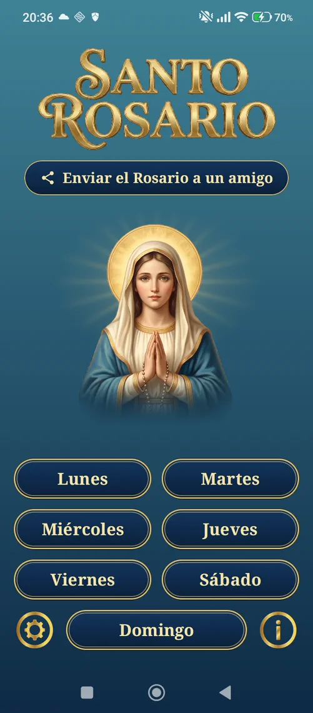
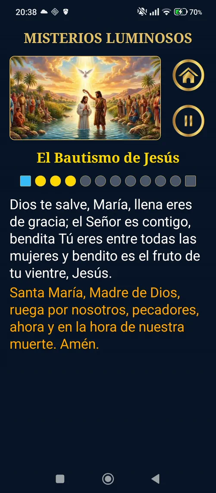
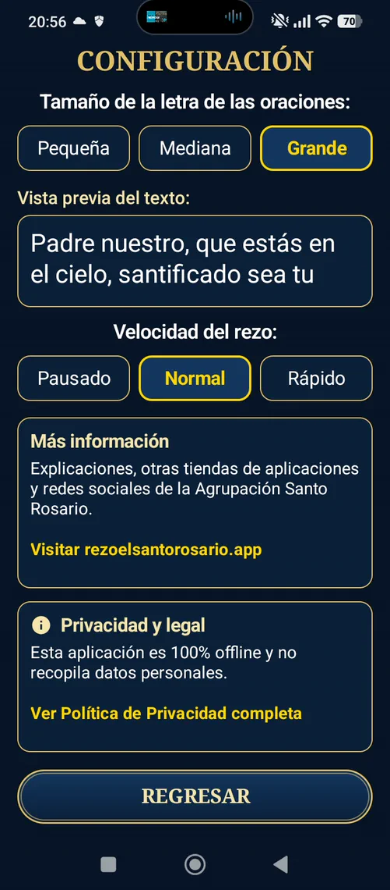

100 % sin internet: Una vez instalada, no necesita cobertura ni consume tus datos móviles. Ideal para rezar en el campo, de viaje o en templos sin señal.
✓
Totalmente gratuita: Sin pagos ocultos, sin suscripciones ni versiones de pago.
✓
Sin anuncios ni interrupciones: Nada rompe el recogimiento mientras rezas.
✓
Privacidad absoluta: No pide registro, ni correo electrónico, ni permisos innecesarios en tu teléfono.
✓
Audio y texto sincronizados: Síguelo leyendo en pantalla o apaga la pantalla y continúa rezando escuchando la guía.
Así es por dentro
Interfaz clara, con letra legible y pensada para facilitar la oración diaria.



«No vendemos nada»
Esta aplicación ha sido desarrollada de forma altruista por programadores voluntarios de la Agrupación Santo Rosario, una comunidad católica que lleva 25 años compartiendo la devoción al Santo Rosario y a la Virgen María en internet y redes sociales.
Nuestro único propósito es ofrecer una herramienta sencilla, digna y accesible para quien quiera rezar el Rosario cada día o aprender a rezarlo, sin pedir nada a cambio.